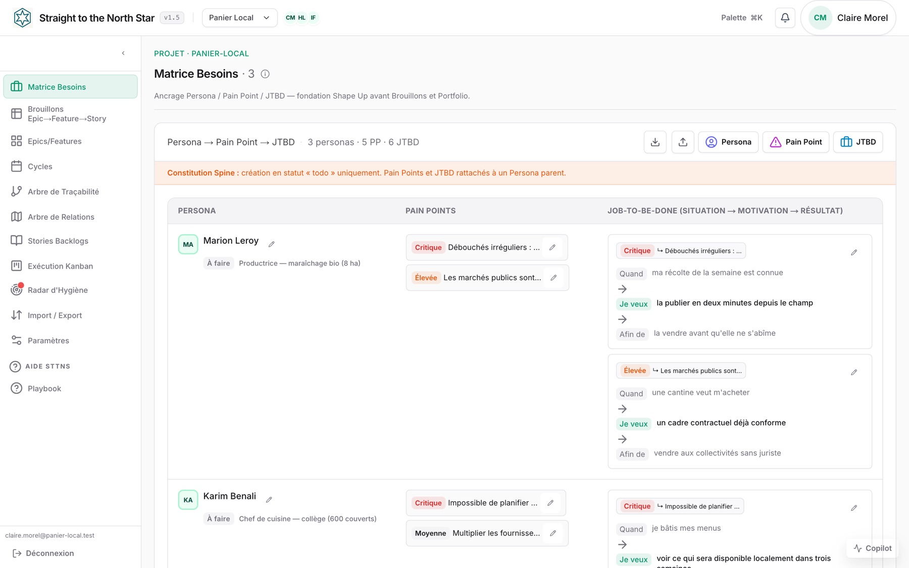
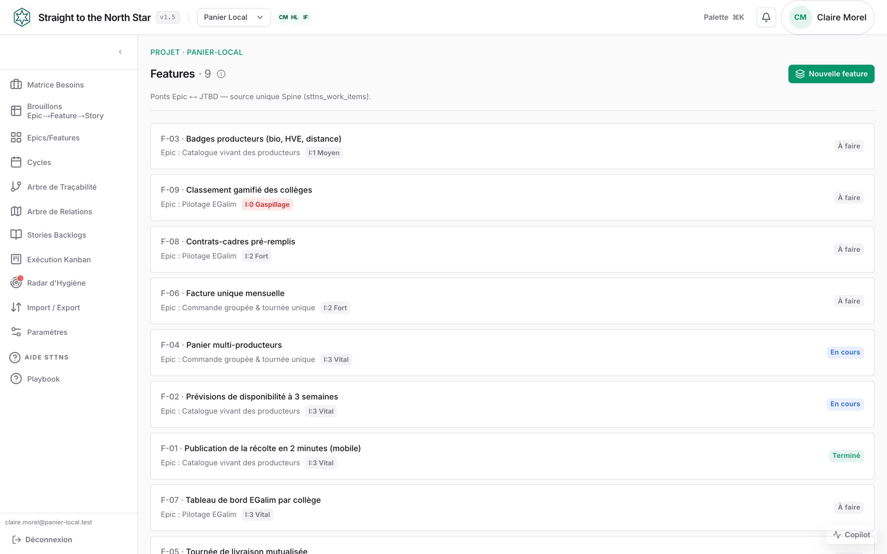
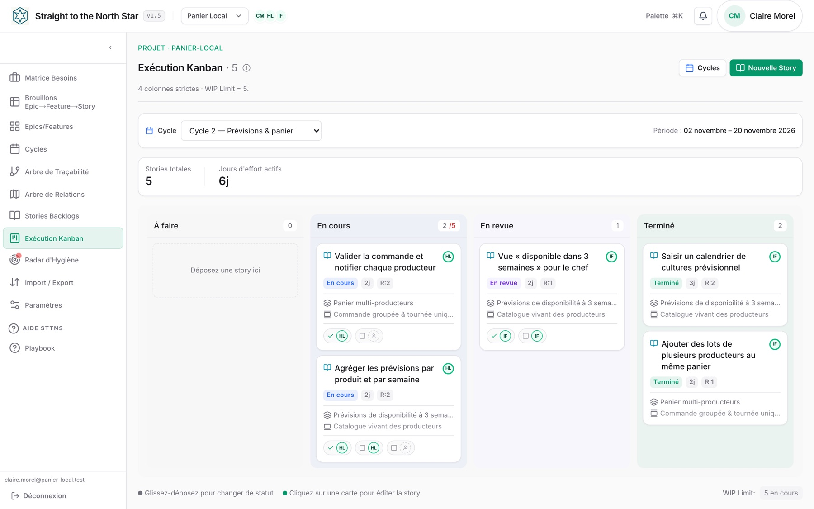
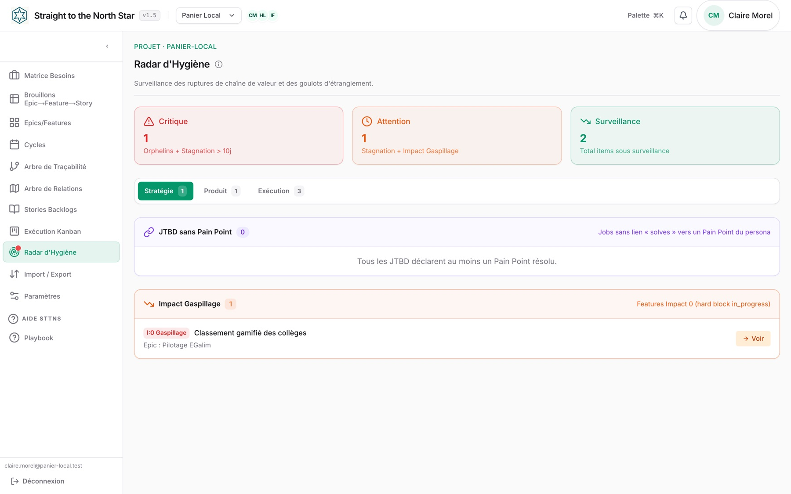
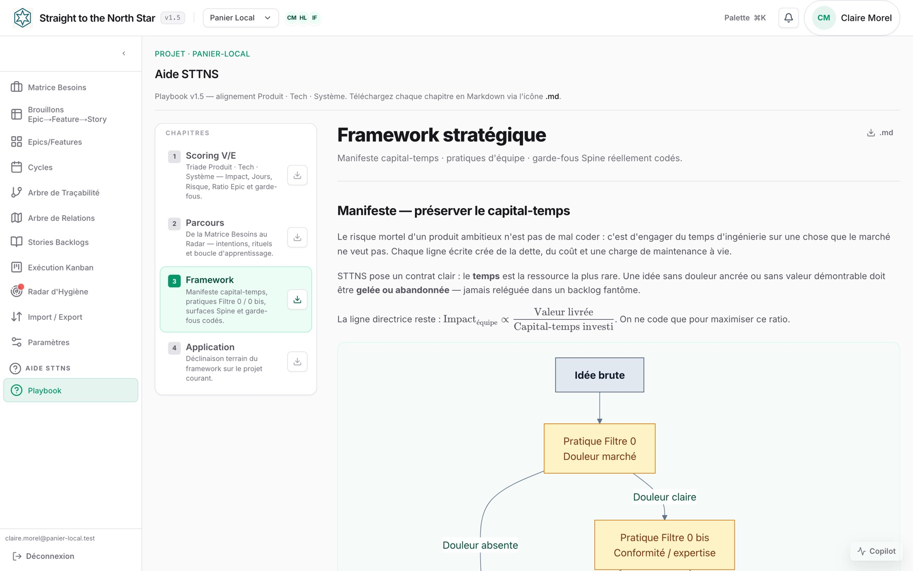

Pourquoi je l’ai construit
Piloter quelques experts, c’est décider chaque semaine où va leur temps. Dans un tableur, on perd vite le fil : qui a demandé cette fonction, pour quel client, avec quel bénéfice attendu ? Les outils de ticketing du marché suivent très bien l’avancement d’un ticket, beaucoup moins la raison de son existence, et leur configuration nous aurait coûté plus de temps que nous n’en avions.
Il me fallait aussi un outil pédagogique. Partir des douleurs des personas et de leurs jobs-to-be-done (JTBD, ce que l’utilisateur cherche à accomplir), tout le monde l’approuve en réunion, mais bien moins d’équipes le pratiquent ensuite. Je voulais que la méthode soit visible à l’écran, sans avoir à la rappeler à chaque point d’équipe.
Au départ, je comptais implémenter le framework Straight to the North Star, d’où le nom. Je l’ai fait, puis j’ai constaté que la North Star Metric, cette métrique unique qui sert de boussole, collait mal à notre activité. Nous faisons du développement logiciel mené par des experts, et la valeur d’une semaine de travail ne tient pas dans un seul chiffre. Le framework actuel est sorti de nos discussions d’équipe sur une question simple : comment choisir ce qu’on code pour ne pas coder ce qui ne sert à personne.
Chez nous, le résultat se voit surtout dans les cycles. Ils sont plus courts, on sait pourquoi on s’y engage, et à la fin on voit ce qui a été livré et pour qui. Je suis toute la chaîne, du besoin à la tâche, sans surveiller de près des experts qui savent mieux que moi découper leur travail.
Les outils de backlog suivent des tickets sans savoir pourquoi ils existent. Les outils de product discovery relient besoins et fonctionnalités, avec un abonnement par utilisateur, mais sans bloquer l’entrée en développement. J’ai préféré peu d’écrans et peu de champs, avec des règles qui bloquent vraiment.
Le manifeste : le temps d’ingénierie est un capital
Le framework repose sur un manifeste, sorti des mêmes discussions d’équipe. Il part d’un constat : le risque qui tue un produit ambitieux, ce n’est pas de mal coder, c’est de consacrer du temps d’ingénierie à quelque chose dont personne ne veut. Chaque ligne écrite crée de la dette, un coût, et une maintenance à vie.
Le temps est donc la ressource la plus rare de l’équipe, et on le traite comme un capital. Une idée sans douleur identifiée, ou sans valeur démontrable, est gelée ou abandonnée. Elle ne va pas dormir au fond d’un backlog en attendant son tour. La ligne directrice tient en une proportion :
$$\mathrm{Impact}_{\text{équipe}} \propto \frac{\text{Valeur livrée}}{\text{Capital-temps investi}}$$
Règle d’or : pas de douleur, pas de produit. Pas de validation, pas de code.
Le manifeste pose deux filtres humains, que l’équipe passe avant toute priorisation. Le premier, « No Pain, No Product », vérifie que l’idée répond à une douleur réelle et pas à une préférence interne. Il pose quatre questions : la douleur s’énonce-t-elle en une phrase, sans jargon ? revient-elle souvent dans le quotidien du persona ? coûte-t-elle quelque chose de chiffrable, en temps, en argent ou en confiance ? la résoudre rapproche-t-il le produit de sa promesse ?
Le second concerne les domaines sensibles : comptabilité, fiscalité, audit, scoring, conformité KYC ou anti-blanchiment. On peut y prototyper pour apprendre, mais rien n’est livré sans la validation d’un expert, décidée par l’équipe. Pas d’expertise, pas de logique réglementaire.
- Idée brute
- Filtre 0douleur réelle ?non → gel ou abandon
- Filtre 0 biszone sensible validée ?non → gel ou abandon
- STTNSchaîne et garde-fous codés
- Code engagé
Ces deux filtres restent une discipline d’équipe : un logiciel ne peut pas juger qu’une douleur est vraie. STTNS prend le relais juste après, et impose ce qui peut l’être.
Le framework, maillon par maillon
Persona et epic sont les deux racines. Sous un persona viennent ses douleurs et ses jobs, et chaque job déclare la douleur qu’il résout. Sous un epic viennent les features, sous une feature les stories, sous une story les tâches. Une feature déclare en plus le job qu’elle sert. La planche ci-dessous rejoue cette chaîne sur le projet de démonstration, puis les règles qui la protègent.
Les règles de filiation vivent dans la base. Des déclencheurs PostgreSQL refusent une story sans feature, ou une feature rattachée à une autre feature, quel que soit l’écran ou l’import qui l’envoie. Les autres garde-fous sont vérifiés par l’application quand une carte change de statut : une feature d’impact 0, ou sans job, ne passe pas « en cours », ses stories non plus, et le Kanban n’accepte pas plus de cinq stories en cours.
Trois mains, trois saisies
Personne ne saisit à la fois la valeur et le coût. Le Produit attribue un impact à la feature, de 0 (gaspillage) à 3 (vital). La Tech estime chaque story en jours (½, 1, 2, 3 ou 5) et en risque (connu, probable, inconnu). L’epic ne reçoit aucune saisie, pour qu’on ne puisse pas le gonfler à la main. Le système additionne ce que les deux autres ont déclaré, puis divise.
$$\mathrm{Ratio}_{V/E}=\frac{\sum \mathrm{Impact}_{\mathrm{features}}}{\sum \mathrm{Jours}_{\mathrm{stories}}}$$
Le risque n’entre pas dans le ratio. Il sert d’alerte : un risque inconnu appelle un spike, une courte exploration technique, avant tout engagement. Et le choix des jours s’arrête à cinq ; au-delà, la story est mal découpée. Aller contre le ratio reste possible, il faut juste l’expliquer.
Démonstration : Panier Local
Pour montrer l’outil sans exposer de données clientes, je l’ai rempli avec un projet inventé de toutes pièces. Panier Local relie des maraîchers à des cantines scolaires. Trois personas le portent.
- Marion, maraîchère bio sur 8 ha, qui jette des invendus en pleine saison et ne comprend rien aux marchés publics.
- Karim, chef d’un collège de 600 couverts, qui compose ses menus trois semaines à l’avance avec 2,10 € de denrées par repas.
- Sophie, acheteuse pour 42 collèges, qui calcule son taux EGalim à la main une fois par an.
En tout, 5 douleurs, 6 jobs, 3 epics, 9 features et 19 stories, dont 13 planifiées sur 3 cycles, pour une équipe de trois personnes, fictives elles aussi.

Le ratio a une conséquence immédiate. « Pilotage EGalim », le seul epic pas encore commencé, a le meilleur rapport, avec 5 points d’impact pour 11 jours, contre 7 pour 19 et 7 pour 17 pour les deux autres. L’outil ne tranche pas, mais on est bien obligé d’en parler au moment de planifier le cycle.

Cycles et Kanban
Les stories se rangent dans des cycles à capacité fixe, à la manière de Shape Up. Le Kanban n’a que quatre colonnes (À faire, En cours, En revue, Terminé). Chaque carte rappelle sa feature et son epic, si bien qu’en la déplaçant on voit toujours pour qui on travaille.

Deux défauts glissés exprès
J’ai glissé deux défauts dans le projet, pour voir si l’outil les trouverait. Le premier est une feature d’impact 0, rattachée à un epic mais à aucun besoin. Le Radar d’hygiène la classe comme gaspillage et comme orpheline, et le Copilot Santé, un encart en bas à droite de chaque écran du projet, la signale aussi. Ce sont des règles, pas un modèle d’IA.
Le second est un job qu’aucune feature ne sert : Sophie veut comparer les prix locaux aux prix grossistes. C’est le graphe de dépendances qui le montre, avec son filtre des jobs sans feature. Dans un vrai projet, le premier aurait coûté du temps pour rien, et le second serait un besoin passé à la trappe. Je préfère les découvrir avant d’engager un cycle.


Sous le capot : la stack
Une application Next.js sur Supabase. Le choix principal : les règles de filiation vivent dans PostgreSQL, pas dans l’interface. Un import CSV, un script ou un nouvel écran passent donc par les mêmes contrôles. L’accès est cloisonné par projet, au niveau des lignes de la base, et chaque modification d’un objet est journalisée.
Application
- Next.jsApp Router, rendu côté serveur
- ReactÉcrans Besoins, Portefeuille, Kanban, Radar
- TypeScriptTout le code de l’application
- Tailwind CSSInterface et composants
- ZodValidation des données saisies
Visualisation
- React FlowMind Map et graphe de dépendances
- MermaidSchémas du Playbook
- MarkdownDescriptions riches des epics, features et stories
- KaTeXFormules dans les descriptions et le Playbook
Données et sécurité
- SupabaseAuthentification, stockage, accès aux données
- PostgreSQLDéclencheurs de filiation, journal d’audit
- Row Level SecurityChacun ne voit que les projets dont il est membre
Tests et déploiement
- VitestTests unitaires et de composants
- DockerApplication conteneurisée, Supabase en local
Ce que STTNS ne fait pas
STTNS ne décide pas à la place de l’équipe, et il ne vérifie pas qu’une douleur est vraie : c’est le rôle du Filtre 0, qui reste humain. L’outil s’assure seulement que tout remonte à une douleur déclarée. Engager un cycle, faire un spike ou abandonner une idée reste notre décision.
Il ne mesure pas encore, après un cycle, si l’impact annoncé s’est produit. C’est le prochain chantier. Il ne se branche pas non plus sur un outil de tickets existant : on importe et on exporte en CSV, et il devient le backlog de référence. Enfin, il demande Supabase, donc pas de démo en ligne pour l’instant.